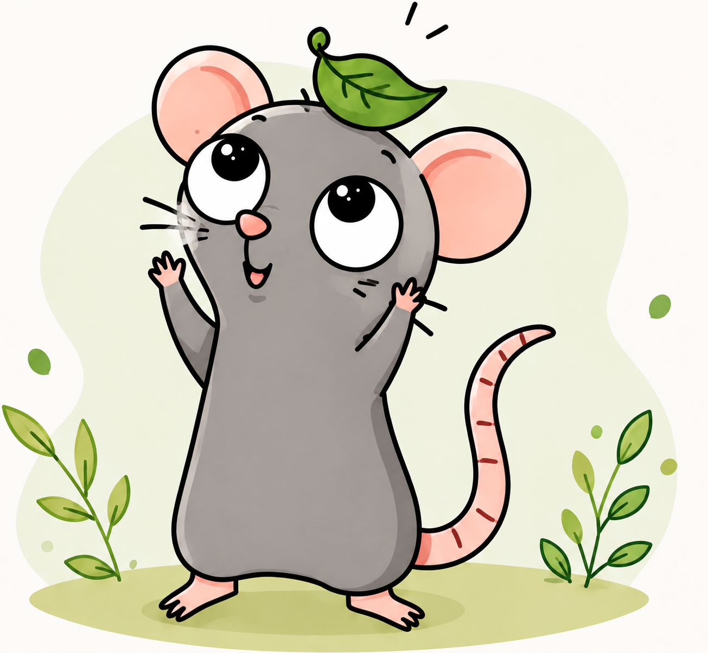

ECO-AÇÃO
Pequenas ações podem
transformar o mundo.
Aprenda, crie, compartilhe, e participe de
iniciaivas que controem um futuro
mais sustentavel para todos.

O que você encontra no Eco-Ação?
🎨
Crie
Encontre processos sustentaveis e faça vecê mesmo com materias reutilizáveis
Explorar ProjetosQuando o caminhão passa na sua rua?
informe seu endereço e descubra os dias e horários da coleta e pontos de descarte perto de você.
Ver minha rota